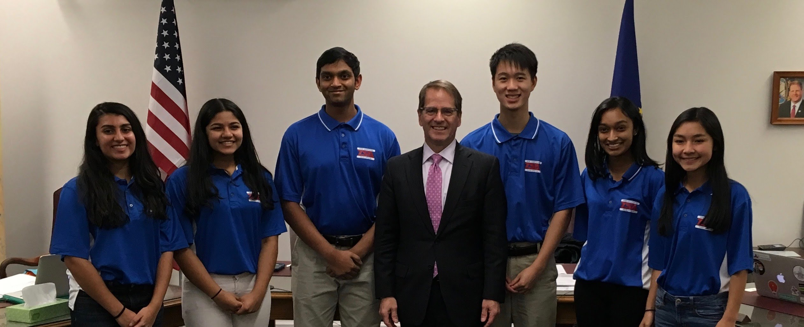

South TSA
The Nashua High School South TSA chapter was founded by a group of freshmen in 2012. The main goal of the Nashua South is to educate people about technology and science by encouraging students to join TSA. The Nashua High School South TSA chapter makes sure its members are always up to date with any news about TSA (ex. conference dates, event deadlines, etc.). Whenever a Nashua High School South chapter TSA member is having any problem or trouble, either related or not related directly to TSA, the Nashua South TSA officers and advisor always help the Nashua High School South TSA in need. These are some of the many things the Nashua High School South TSA chapter accomplishes.